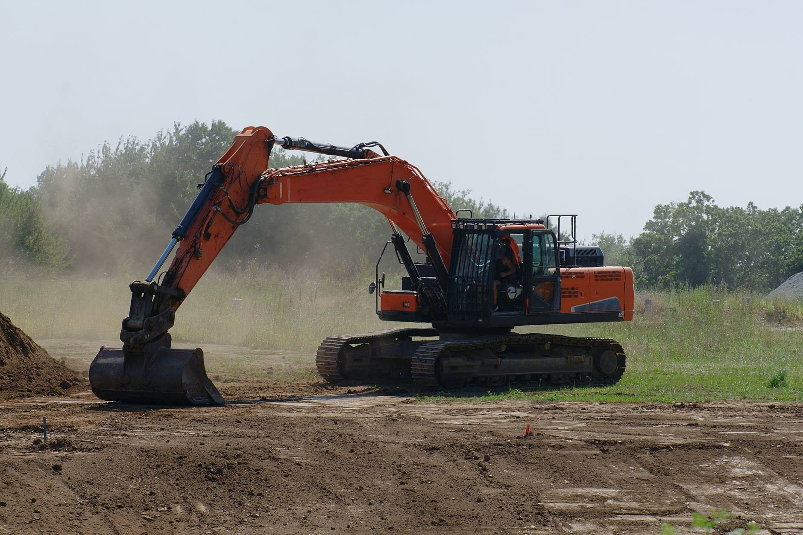
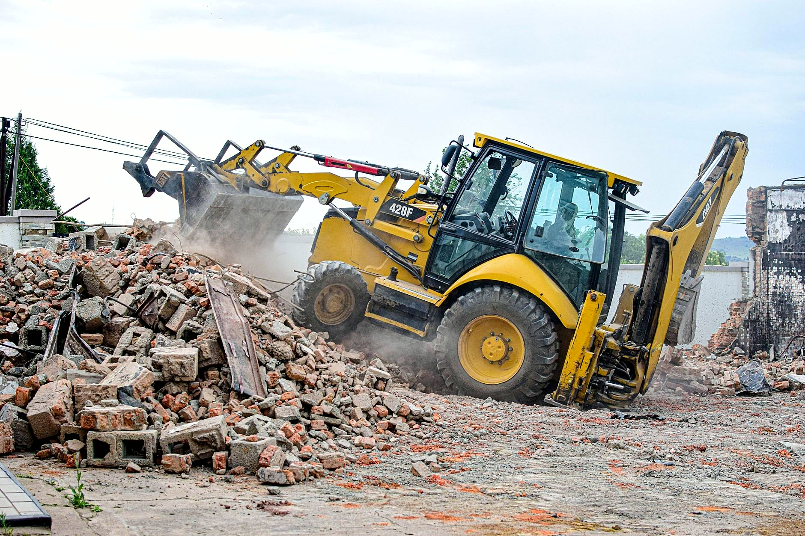

Drogi, wykopy i rozbiórki. Od wykopu po wjazd.
Drogi dojazdowe i place, wykopy pod fundamenty i przyłącza, rozbiórki starych budynków, transport kruszywa, ziemi i gruzu.
Zadzwoń teraz +48 696 619 247- Wycena po oględzinach
- Florianów, gmina Popów
- Drogi, wykopy, rozbiórki
Co jest do zrobienia?
Wybierz temat. Umówimy oględziny i podamy cenę.

Wiesz, na czym stoisz - na każdym etapie
Od pierwszego telefonu do odbioru roboty - krok po kroku.
- 01
Telefon
Mówisz, co i gdzie jest do zrobienia: droga, plac, wykop, rozbiórka albo transport.
- 02
Oględziny i wycena
Przyjeżdżamy zobaczyć teren, dojazd i grunt. Podajemy cenę i zakres: co wybieramy, co wywozimy, co dowozimy.
- 03
Prace na placu
Wjeżdżamy w ustalonym terminie i robimy etap po etapie. O postępach mówimy na bieżąco.
- 04
Teren gotowy
Plac zostaje wyrównany i przejezdny, urobek i gruz wywieziony. Możesz wpuszczać kolejną ekipę.
Rodzaje prac
Drogi i place, wykopy, rozbiórki i transport - prace, które wykonujemy.




Prace ziemne i drogowe od wykopu po nawierzchnię
Zakres prac, jaki robimy najczęściej - pełny opis i wycenę znajdziesz niżej.
- Drogi dojazdowe i placeKorytowanie, podbudowa z kruszywa układana warstwami i zagęszczana walcem, na wierzchu kostka, asfalt albo sam tłuczeń.Wycena →
- Wykopy i przygotowanie terenuZdejmujemy humus, wybieramy grunt pod ławy, płytę albo piwnicę i wyrównujemy działkę do poziomu z projektu.Wycena →
- Rozbiórki i wyburzeniaStare stodoły, obory, garaże i budynki gospodarcze, fundamenty i betonowe posadzki.Wycena →
- Przyłącza wody i kanalizacjiWykopy pod wodociąg, kanalizację i przyłącza do budynku. Rury układamy na podsypce, a po odbiorze zasypujemy wykop i zagęszczamy go warstwami, żeby nic się potem nie zapadało.Wycena →
- Budowa budynkówStany surowe domów jednorodzinnych, budynki gospodarcze, garaże i hale.Wycena →
- Transport kruszywa, ziemi i gruzuDowozimy piasek, żwir i tłuczeń na budowę, wywozimy urobek i gruz z rozbiórki.Wycena →
Potrzebujesz fachowca? Wycenimy za darmo.
Jeden telefon i przyjedziemy zobaczyć zakres. Wycena nic nie kosztuje.